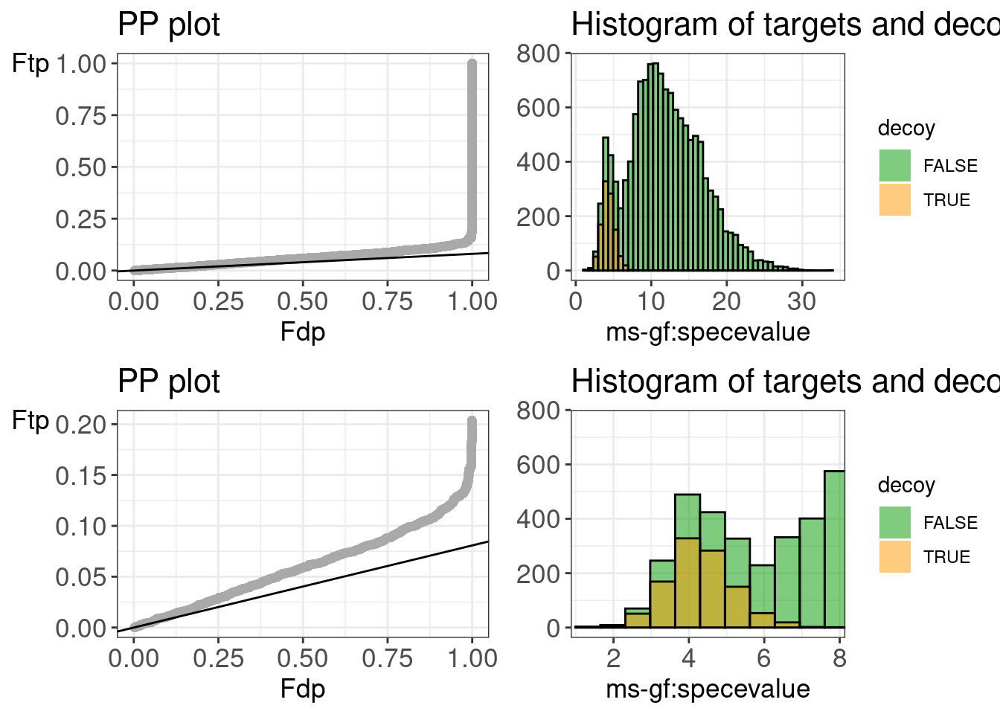

Load Libraries
library(TargetDecoy)
library(RCurl)
library(mzID)
Download data in
working directory
download.file(
url = "https://raw.githubusercontent.com/statOmics/PDA22GTPB/data/identification/pyroUniprot.mzid",
destfile = "pyroUniprot.mzid"
)
Load Data in R
path2File <- "pyroUniprot.mzid"
mzidUniprot <- mzID(path2File)
## reading pyroUniprot.mzid... DONE!
Launch the Shiny
Gadget
Explore the results for search eninge scores to find correct names of
search engine scores in the mzID.
evalTargetDecoys(mzidUniprot)
Evaluate target decoy
assumptions
Peptide Shaker
evalTargetDecoys(
object = mzidUniprot,
decoy = "isdecoy",
score = "peptideshaker psm score",
log10 = FALSE)
We observe that
the histogram shows that Peptide Shaker gives a very good
separation between good targets and bad targets.
the histogram and PP show that the distribution of bad target
peptideshaker PSM scores have the same distribution of decoy
peptideshaker PSM scores.
The PP-plot shows that the ratio of decoys on targets is a good
estimate of the expected fraction of bad target hits that are returned
(\(\hat\pi_b=\frac{\#
\text{decoys}}{\#\text{targets}}\) is a good estimate of the
fraction of bad target hits). We can thus assume that it is equaly
likely that a bad PSM hit will match to a target sequence or a decoy
sequence.
It is not really required to assess the assumptions of the search
engines used by peptide shaker because there are no problems.
For completeness we still evaluate the different search engines
used by peptide shaker.
MSGF+
evalTargetDecoys(
object = mzidUniprot,
decoy = "isdecoy",
score = "ms-gf:specevalue",
log10 = TRUE)

The plots show that the distribution of the MSGF+ PSM scores are
nicely bimodal.
The separation between good target PSM scores and bad target PSM
scores is less pronounced than for peptide shaker. So it is beneficial
to include the other engines with peptideshaker.
We do not see deviations from the target decoy
assumptions.
Omssa
evalTargetDecoys(
object = mzidUniprot,
decoy = "isdecoy",
score = "omssa:evalue",
log10 = TRUE)
The separation between good target PSM scores and bad target PSM
scores is less pronounced for omssa than for peptide shaker. So it is
beneficial to include the other engines with peptideshaker.
We do not see deviations from the target decoy
assumptions.
X!Tandem
evalTargetDecoys(
object = mzidUniprot,
decoy = "isdecoy",
score = "x!tandem:expect",
log10 = TRUE)
The separation between good target PSM scores and bad target PSM
scores is less pronounced for X!Tandem than for peptide shaker. So it is
beneficial to include the other engines with peptideshaker.
The decoy PSM score distribution has the same shape as the PSM
score distribution of bad targets.
There seems to be some evidence that bad PSM hits are more likely
to go to target than to decoy sequences. However, this does not lead to
problems when combining X!tandem with other engines in peptide
shaker.
LS0tCnRpdGxlOiAiVHV0b3JpYWw6IEV2YWx1YXRlIHB5cm9jb2NjdXMgc2VhcmNoZXMgdXNpbmcgdW5pcHJvdCBhbmQgcGVwdGlkZSBzaGFrZXIiCmF1dGhvcjogCiAgLSBuYW1lOiBMaWV2ZW4gQ2xlbWVudAogICAgYWZmaWxpYXRpb246CiAgICAtIEdoZW50IFVuaXZlcnNpdHkKb3V0cHV0OiAKICAgIGh0bWxfZG9jdW1lbnQ6CiAgICAgIGNvZGVfZG93bmxvYWQ6IHRydWUKICAgICAgdGhlbWU6IGZsYXRseQogICAgICB0b2M6IHRydWUKICAgICAgdG9jX2Zsb2F0OiB0cnVlCiAgICAgIGhpZ2hsaWdodDogdGFuZ28KICAgICAgbnVtYmVyX3NlY3Rpb25zOiB0cnVlCmxpbmtjb2xvcjogYmx1ZQp1cmxjb2xvcjogYmx1ZQpjaXRlY29sb3I6IGJsdWUKLS0tCgojIExvYWQgTGlicmFyaWVzIAoKYGBge3J9CmxpYnJhcnkoVGFyZ2V0RGVjb3kpCmxpYnJhcnkoUkN1cmwpCmxpYnJhcnkobXpJRCkKYGBgCgojIERvd25sb2FkIGRhdGEgaW4gd29ya2luZyBkaXJlY3RvcnkKCmBgYHtyfQpkb3dubG9hZC5maWxlKCAKICB1cmwgPSAiaHR0cHM6Ly9yYXcuZ2l0aHVidXNlcmNvbnRlbnQuY29tL3N0YXRPbWljcy9QREEyMkdUUEIvZGF0YS9pZGVudGlmaWNhdGlvbi9weXJvVW5pcHJvdC5temlkIiwKICBkZXN0ZmlsZSA9ICJweXJvVW5pcHJvdC5temlkIgogICkKYGBgCgojIExvYWQgRGF0YSBpbiBSCgpgYGB7cn0KcGF0aDJGaWxlIDwtICJweXJvVW5pcHJvdC5temlkIgptemlkVW5pcHJvdCA8LSBteklEKHBhdGgyRmlsZSkKYGBgCgojIExhdW5jaCB0aGUgU2hpbnkgR2FkZ2V0IAoKRXhwbG9yZSB0aGUgcmVzdWx0cyBmb3Igc2VhcmNoIGVuaW5nZSBzY29yZXMgdG8gZmluZCBjb3JyZWN0IG5hbWVzIG9mIHNlYXJjaCBlbmdpbmUgc2NvcmVzIGluIHRoZSBteklELgoKYGBge3IgZXZhbD1GQUxTRX0KZXZhbFRhcmdldERlY295cyhtemlkVW5pcHJvdCkKYGBgCgojIEV2YWx1YXRlIHRhcmdldCBkZWNveSBhc3N1bXB0aW9ucyAKCiMjIFBlcHRpZGUgU2hha2VyCgpgYGB7cn0KZXZhbFRhcmdldERlY295cygKICBvYmplY3QgPSBtemlkVW5pcHJvdCwgCiAgZGVjb3kgPSAiaXNkZWNveSIsIAogIHNjb3JlID0gInBlcHRpZGVzaGFrZXIgcHNtIHNjb3JlIiwKICBsb2cxMCA9IEZBTFNFKQpgYGAKCldlIG9ic2VydmUgdGhhdCAKCi0gdGhlIGhpc3RvZ3JhbSBzaG93cyB0aGF0IFBlcHRpZGUgU2hha2VyIGdpdmVzIGEgdmVyeSBnb29kIHNlcGFyYXRpb24gYmV0d2VlbiBnb29kIHRhcmdldHMgYW5kIGJhZCB0YXJnZXRzLiAKCi0gdGhlIGhpc3RvZ3JhbSBhbmQgUFAgc2hvdyB0aGF0IHRoZSBkaXN0cmlidXRpb24gb2YgYmFkIHRhcmdldCBwZXB0aWRlc2hha2VyIFBTTSBzY29yZXMgaGF2ZSB0aGUgc2FtZSBkaXN0cmlidXRpb24gb2YgZGVjb3kgcGVwdGlkZXNoYWtlciBQU00gc2NvcmVzLgoKLSBUaGUgUFAtcGxvdCBzaG93cyB0aGF0IHRoZSByYXRpbyBvZiBkZWNveXMgb24gdGFyZ2V0cyBpcyBhIGdvb2QgZXN0aW1hdGUgb2YgdGhlIGV4cGVjdGVkIGZyYWN0aW9uIG9mIGJhZCB0YXJnZXQgaGl0cyB0aGF0IGFyZSByZXR1cm5lZCAoJFxoYXRccGlfYj1cZnJhY3tcIyBcdGV4dHtkZWNveXN9fXtcI1x0ZXh0e3RhcmdldHN9fSQgaXMgYSBnb29kIGVzdGltYXRlIG9mIHRoZSBmcmFjdGlvbiBvZiBiYWQgdGFyZ2V0IGhpdHMpLiBXZSBjYW4gdGh1cyBhc3N1bWUgdGhhdCBpdCBpcyBlcXVhbHkgbGlrZWx5IHRoYXQgYSBiYWQgUFNNIGhpdCB3aWxsIG1hdGNoIHRvIGEgdGFyZ2V0IHNlcXVlbmNlIG9yIGEgZGVjb3kgc2VxdWVuY2UuICAKCi0gSXQgaXMgbm90IHJlYWxseSByZXF1aXJlZCB0byBhc3Nlc3MgdGhlIGFzc3VtcHRpb25zIG9mIHRoZSBzZWFyY2ggZW5naW5lcyB1c2VkIGJ5IHBlcHRpZGUgc2hha2VyIGJlY2F1c2UgdGhlcmUgYXJlIG5vIHByb2JsZW1zLiAKCi0gRm9yIGNvbXBsZXRlbmVzcyB3ZSBzdGlsbCBldmFsdWF0ZSB0aGUgZGlmZmVyZW50IHNlYXJjaCBlbmdpbmVzIHVzZWQgYnkgcGVwdGlkZSBzaGFrZXIuIAoKIyMgTVNHRisKCgpgYGB7cn0KZXZhbFRhcmdldERlY295cygKICBvYmplY3QgPSBtemlkVW5pcHJvdCwgCiAgZGVjb3kgPSAiaXNkZWNveSIsIAogIHNjb3JlID0gIm1zLWdmOnNwZWNldmFsdWUiLAogIGxvZzEwID0gVFJVRSkKYGBgCgotIFRoZSBwbG90cyBzaG93IHRoYXQKdGhlIGRpc3RyaWJ1dGlvbiBvZiB0aGUgTVNHRisgUFNNIHNjb3JlcyBhcmUgbmljZWx5IGJpbW9kYWwuIAoKLSBUaGUgc2VwYXJhdGlvbiBiZXR3ZWVuIGdvb2QgdGFyZ2V0IFBTTSBzY29yZXMgYW5kIGJhZCB0YXJnZXQgUFNNIHNjb3JlcyBpcyBsZXNzIHByb25vdW5jZWQgdGhhbiBmb3IgcGVwdGlkZSBzaGFrZXIuIFNvIGl0IGlzIGJlbmVmaWNpYWwgdG8gaW5jbHVkZSB0aGUgb3RoZXIgZW5naW5lcyB3aXRoIHBlcHRpZGVzaGFrZXIuIAoKLSBXZSBkbyBub3Qgc2VlIGRldmlhdGlvbnMgZnJvbSB0aGUgdGFyZ2V0IGRlY295IGFzc3VtcHRpb25zLiAKCiMjIE9tc3NhCgpgYGB7cn0KZXZhbFRhcmdldERlY295cygKICBvYmplY3QgPSBtemlkVW5pcHJvdCwgCiAgZGVjb3kgPSAiaXNkZWNveSIsIAogIHNjb3JlID0gIm9tc3NhOmV2YWx1ZSIsCiAgbG9nMTAgPSBUUlVFKQpgYGAKCgotIFRoZSBzZXBhcmF0aW9uIGJldHdlZW4gZ29vZCB0YXJnZXQgUFNNIHNjb3JlcyBhbmQgYmFkIHRhcmdldCBQU00gc2NvcmVzIGlzIGxlc3MgcHJvbm91bmNlZCBmb3Igb21zc2EgdGhhbiBmb3IgcGVwdGlkZSBzaGFrZXIuIFNvIGl0IGlzIGJlbmVmaWNpYWwgdG8gaW5jbHVkZSB0aGUgb3RoZXIgZW5naW5lcyB3aXRoIHBlcHRpZGVzaGFrZXIuIAoKLSBXZSBkbyBub3Qgc2VlIGRldmlhdGlvbnMgZnJvbSB0aGUgdGFyZ2V0IGRlY295IGFzc3VtcHRpb25zLiAKCiMjIFghVGFuZGVtCgpgYGB7cn0KZXZhbFRhcmdldERlY295cygKICBvYmplY3QgPSBtemlkVW5pcHJvdCwgCiAgZGVjb3kgPSAiaXNkZWNveSIsIAogIHNjb3JlID0gInghdGFuZGVtOmV4cGVjdCIsCiAgbG9nMTAgPSBUUlVFKQpgYGAKCgotIFRoZSBzZXBhcmF0aW9uIGJldHdlZW4gZ29vZCB0YXJnZXQgUFNNIHNjb3JlcyBhbmQgYmFkIHRhcmdldCBQU00gc2NvcmVzIGlzIGxlc3MgcHJvbm91bmNlZCBmb3IgWCFUYW5kZW0gdGhhbiBmb3IgcGVwdGlkZSBzaGFrZXIuIFNvIGl0IGlzIGJlbmVmaWNpYWwgdG8gaW5jbHVkZSB0aGUgb3RoZXIgZW5naW5lcyB3aXRoIHBlcHRpZGVzaGFrZXIuIAoKLSBUaGUgZGVjb3kgUFNNIHNjb3JlIGRpc3RyaWJ1dGlvbiBoYXMgdGhlIHNhbWUgc2hhcGUgYXMgdGhlIFBTTSBzY29yZSBkaXN0cmlidXRpb24gb2YgYmFkIHRhcmdldHMuIAoKLSBUaGVyZSBzZWVtcyB0byBiZSBzb21lIGV2aWRlbmNlIHRoYXQgYmFkIFBTTSBoaXRzIGFyZSBtb3JlIGxpa2VseSB0byBnbyB0byB0YXJnZXQgdGhhbiB0byBkZWNveSBzZXF1ZW5jZXMuIEhvd2V2ZXIsIHRoaXMgZG9lcyBub3QgbGVhZCB0byBwcm9ibGVtcyB3aGVuIGNvbWJpbmluZyBYIXRhbmRlbSB3aXRoIG90aGVyIGVuZ2luZXMgaW4gcGVwdGlkZSBzaGFrZXIuIAo=